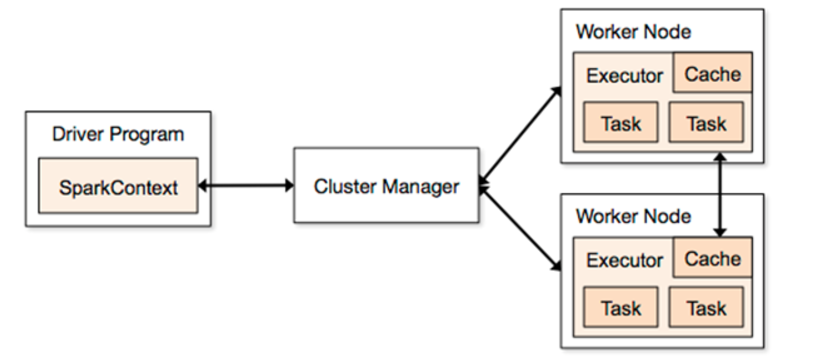

spark基础
1、目标
- 1、掌握spark相关概念
- 2、掌握搭建一个spark集群
- 3、掌握开发简单的spark应用程序
2、spark概述
2.1 spark是什么
- Apache Spark™ is a unified analytics engine for large-scale data processing.
- apache的spark是一个针对于大规模数据处理的统一分析引擎
1 | spark是基于内存计算的分布式分析引擎，计算速度非常快，这里仅仅只涉及到数据的计算，并没有涉及到数据的存储，后期再使用spark的时候，就需要对接一些外部的数据源（比如HDFS） |
2.2 为什么要学习spark
1 | 由于spark的处理速度比mapreduce快很多，很受企业青睐，所以我今天就重点学习它 |
2.3 spark框架的四大特性
1、速度快
spark比mapreduce处理任务在内存中快100倍，在磁盘中快10倍
spark比mapreduce速度快的2个主要原因
1
2
3
4
5（1） mapreduce任务每一次job的输出结果只能够保存在磁盘中，后续有其他的job需要依赖于前面job的输出结果，这个时候只能够进行大量的磁盘io操作，获取得到。spark任务每一次的job输出结果可以直接保存在内存中，后续有其他的job需要依赖于前面job的输出结果，这个时候就可以直接从内存中获取得到。大大减少磁盘io操作，最后整体上提升性能。
hivesql: select name,age,sex from (select * from user where age >30)
(2) mapreduce任务它是以进程的方式运行在yarn中，比如一个mapreduce任务中，有100个MapTask,这个时候就需要开启100个进程去运行着100个task；spark任务的它是以线程的方式运行在进程中，比如一个spark任务中还是有100个task，后期再运行的时候，可以极端一点，开启一个进程，在这一个进程中运行100个线程即可。 开启一个进程跟开启一个线程的代价肯定是不一样，开启一个进程需要的时间远远高于开启一个线程需要的时间。
2、易用性
- 可以快速开发一个spark应用程序，通过java、scala、python、R、SQL等不同的语言进行代码开发
- 3、通用性
- spark框架不在是一个简单的框架，它发展成一个spark的生态系统，它是包括了很多不同的子项目
- Sparksql
- sparkStreaming
- Mlib
- Graphx
- spark框架不在是一个简单的框架，它发展成一个spark的生态系统，它是包括了很多不同的子项目
- 4、兼容性
- spark程序就是一个计算任务，哪里可以给当前这个任务提供计算资源，我们就可以把spark程序提交到哪里去运行
- standAlone
- 它是spark集群自带的模式，整个任务的资源分配由spark集群中的老大Master节点负责
- yarn
- 可以把spark程序提交到yarn中去运行，整个任务的资源分配由yarn中的老大ResouceManager
- mesos
- 它也是一个类似于yarn的开源的资源调度框架
- standAlone
- spark程序就是一个计算任务，哪里可以给当前这个任务提供计算资源，我们就可以把spark程序提交到哪里去运行
3、spark集群安装部署
1、下载对应的安装包
- http://mirrors.tuna.tsinghua.edu.cn/apache/spark/spark-2.1.3/spark-2.1.3-bin-hadoop2.7.tgz
- spark-2.1.3-bin-hadoop2.7.tgz
2、规划安装目录
- /export/servers
3、上传安装包到服务器中
4、解压安装包到指定的规划目录
- tar -zxvf spark-2.1.3-bin-hadoop2.7.tgz -C /export/servers
5、重命名解压目录
- mv spark-2.1.3-bin-hadoop2.7 spark
6、修改配置文件
进入到spark的安装目录有一个conf文件夹
vim spark-env.sh ( mv spark-env.sh.template spark-env.sh)
1
2
3
4
5
6#配置java环境变量
export JAVA_HOME=/export/servers/jdk
#指定master的地址
export SPARK_MASTER_HOST=node1
#指定master的端口
export SPARK_MASTER_PORT=7077vim slaves (mv slaves.template slaves)
1
2
3#指定哪些节点是worker
node2
node3
7、配置spark环境变量
vim /etc/profile
1
2export SPARK_HOME=/export/servers/spark
export PATH=$PATH:$SPARK_HOME/bin:$SPARK_HOME/sbin
8、分发spark目录和环境变量
1
2
3
4
5scp -r spark node2:/export/servers
scp -r spark node3:/export/servers
scp /etc/profile node2:/etc
scp /etc/profile node3:/etc9、让所有spark节点的环境变量生效
- 可以在所有节点执行
- source /etc/profile
- 可以在所有节点执行
4、spark集群的启动和停止
- 1、启动spark集群
- 在主节点执行脚本
- sbin/start-all.sh
- 首先在主节点启动了一个Master进程，它是整个spark集群的老大，负责任务的资源分配
- 通过slaves文件执行的worker节点来分别启动worker进程
- 在主节点执行脚本
- 2、停止spark集群
- 在主节点执行脚本
- sbin/stop-all.sh
- 在主节点执行脚本
5、spark集群的web管理界面
- 1、启动好spark集群之后
- 可以访问地址
- master主机名:8080
- 可以看到spark集群的所有信息
- spark集群的总的资源信息
- spark集群已经使用的资源信息
- spark集群还剩的资源信息
- spark集群中每一个worker的相关信息
- spark集群中正在运行的任务信息
- spark集群中已经完成的任务信息
- 可以访问地址
6、基于zk构建高可用的spark集群
1、事先搭建一个zk集群
2、修改配置
vim spark-env.sh
1
2
3
4
5#把之前手动指定哪一个节点是活着的master这个参数注释掉
#export SPARK_MASTER_HOST=node1
#引入zk，构建高可用的spark集群
export SPARK_DAEMON_JAVA_OPTS="-Dspark.deploy.recoveryMode=ZOOKEEPER -Dspark.deploy.zookeeper.url=node1:2181,n
ode2:2181,node3:2181 -Dspark.deploy.zookeeper.dir=/spark"
3、分发文件到其他机器
1
2scp spark-env.sh node2:/export/servers/spark/conf
scp spark-env.sh node3:/export/servers/spark/conf4、先启动zk
5、启动spark集群
1、可以在任意一台机器来启动一个脚本（前提条件：实现任意2台机器之间的ssh免密登录）
- sbin/start-all.sh
2、它会在当前机器启动一个Master进程（活着的master）
3、整个spark集群中的worker进程由slaves文件决定
4、在其他机器单独启动master
- sbin/start-master.sh
master恢复逻辑
1
2
3
4
5
6
7
8
9
10首先基于引入了zk集群，这个时候整个spark集群中有很多个master，其中一个master被选举成活着的master，它提供服务，后期给任务分配资源。还有其他多个master被选举成备用的master（standBy）,它不提供服务。
当前活着的master挂掉了，首先zk会感知到，接下来在所有处于standBy中的master进行选举，最后生成一个活着的master，后期需要从zk集群中读取保存了spark集群的元数据节点spark。最后恢复到上一次master的状态，整个恢复需要一定的时间，一般就是1-2分钟。
整个spark集群master正处于恢复阶段，对任务有没有影响？
（1）对于正在运行的任务有没有影响，没有影响。
由于任务正在运行，就说明它已经获取得到了资源，既然有资源了，就跟master没有关系，任务可以继续运行。这里就是没有任何影响
（2）对于正准备提交的任务有没有影响，有影响。
由于没有这样一个活着的master去分配资源，也就说任务获取不到资源，既然没有资源，任务也就无法运行，必须等到活着的master出现之后，才可以申请到资源。
7、spark集群架构

- 1、Driver端
- 它会运行客户端的main方法和构建SparkContext对象，SparkContext对象是所有spark程序的执行入口
- 2、Application
- 它就是一个spark的应用程序，包括了Driver的代码和任务运行的时候需要的资源信息
- 3、ClusterManager
- 它是给计算任务提供计算资源的外部服务
- standAlone
- 它是spark集群自带的模式，任务的资源分配由老大Master节点负责
- yarn
- 可以把spark程序提交到yarn中去运行，任务的资源分配由yarn中老大ResourceManager负责
- mesos
- 它也是一个类似于yarn资源调度平台
- standAlone
- 它是给计算任务提供计算资源的外部服务
- 4、Master
- 它是整个spark集群的老大，负责资源的分配
- 5、Worker
- 它是整个spark集群的小弟，负责任务的计算节点
- 6、Executor
- 它是一个进程，在这里表示计算的资源
- 它会在worker节点启动executor进程
- 它是一个进程，在这里表示计算的资源
- 7、task
- 它就是一个线程
- 它是以task线程的方式运行在worker节点对应的executor进程中
- 它就是一个线程
8、初识spark程序
1、普通模式提交任务（就是我们已经知道了集群中活着的master地址）
1
2
3
4
5
6
7bin/spark-submit \
--class org.apache.spark.examples.SparkPi \
--master spark://node-1:7077 \
--executor-memory 1G \
--total-executor-cores 2 \
examples/jars/spark-examples_2.11-2.1.3.jar \
1002、高可用模式下提交任务（就是集群中有很多个master，这个时候我也不知道哪一个master是活着的master）
code here 1
2
3
4
5
6
7
8
9
10
11
12
bin/spark-submit \
--class org.apache.spark.examples.SparkPi \
--master spark://node-1:7077,node-2:7077,node-3:7077 \
--executor-memory 1G \
--total-executor-cores 2 \
examples/jars/spark-examples_2.11-2.1.3.jar \
100
后期再实际环境中，有很多个master，任务的提交需要找到活着的master去申请资源，这个时候我们不知道哪一个master是活着的master，这里我们就可以把所有的master都罗列出来：
--master spark://node1:7077,node2:7077,node3:7077
后期程序在运行的时候，它会通过轮训的机制最后找到活着的master，然后向活着的master申请计算资源。
9、spark-shell使用
9.1 通过spark-shell –master local[N] 读取本地数据文件实现单词统计
–master local[N]
- local表示本地运行，跟spark集群没有任何关系
- N表示一个正整数，在这里local[N] 表示本地采用N个线程去跑任务
spark-shell –master local[2]
代码
1
2
3sc.textFile("file:///root/words.txt").flatMap(x=>x.split(" ")).map(x=>(x,1)).reduceByKey((x,y)=>x+y).collect
sc.textFile("file:///root/words.txt").flatMap(_.split(" ")).map((_,1)).reduceByKey(_+_).collect
9.2 通过spark-shell –master local[N] 读取HDFS数据文件实现单词统计
spark整合HDFS
- vim spark-env.sh
1
2#spark整合HDFS
export HADOOP_CONF_DIR=/export/servers/hadoop/etc/hadoopspark-shell –master local[2]
代码
1 | sc.textFile("hdfs://node1:9000/words.txt").flatMap(_.split(" ")).map((_,1)).reduceByKey(_+_).collect |
9.3 通过spark-shell 指定具体活着的master实现HDFS上文件单词统计，把结果数据保存到hdfs上
- spark-shell –master spark://node2:7077 –executor-memory 1g –total-executor-cores 4
- 代码
1 | sc.textFile("/words.txt").flatMap(_.split(" ")).map((_,1)).reduceByKey(_+_).saveAsTextFile("/out") |
10、通过IDEA开发spark的程序
10.1 利用scala语言开发spark的wordcount程序（本地运行）
- 1、引入依赖
1 | <dependency> |
- 2、代码开发
1 | package cn.itcast.spark |
10.2 利用scala语言开发spark的wordcount程序（集群运行）
- 1、代码开发
1 | package cn.itcast.spark |
- 2、把程序打成jar包提交到spark集群中运行
1 | spark-submit \ |
10.3 利用java语言开发spark的wordcount程序（本地运行）
- 1、代码开发
1 | package cn.itcast.spark; |